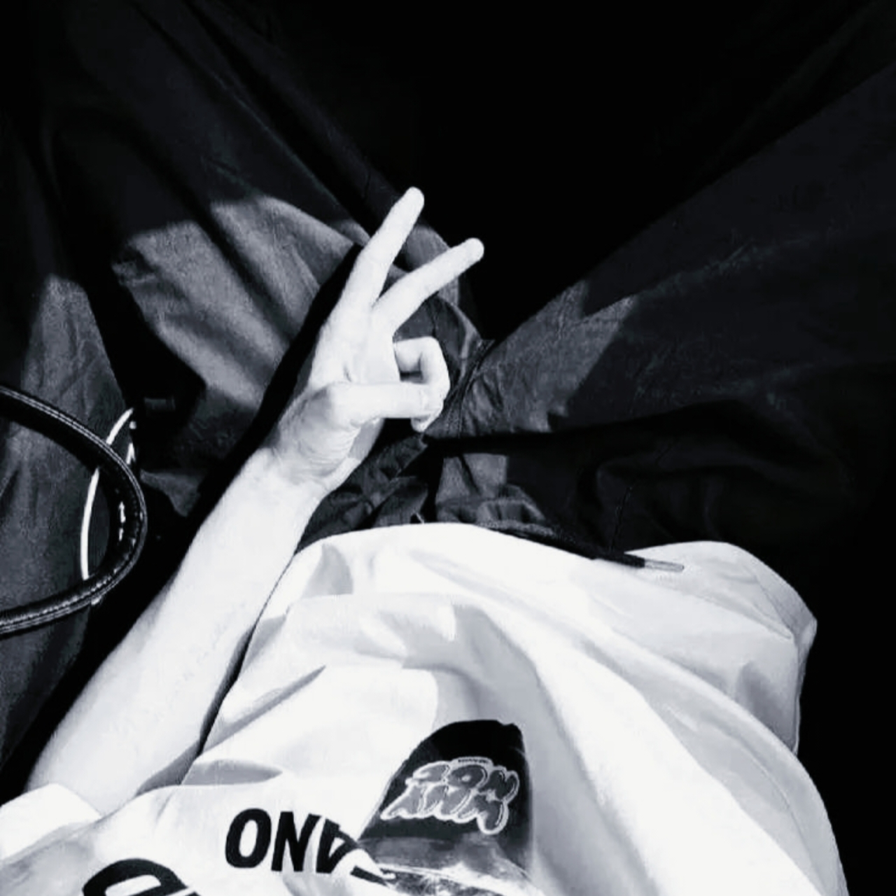

Developer & Admin
halo nama gw Yuda gw adalah seorang developer yang fokus sama gtps,mc,roblox (udah tutup), dan web designer
sekarang lagi aktif ngerjain beberapa project yang tentu nya gaboleh di sebarin :v